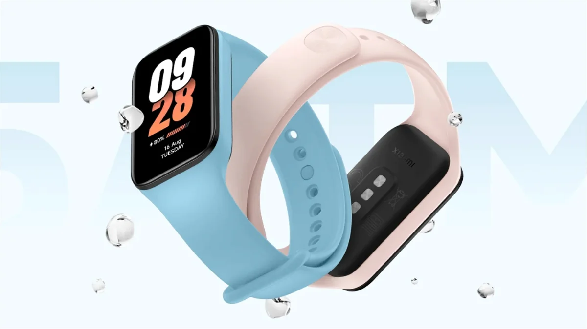
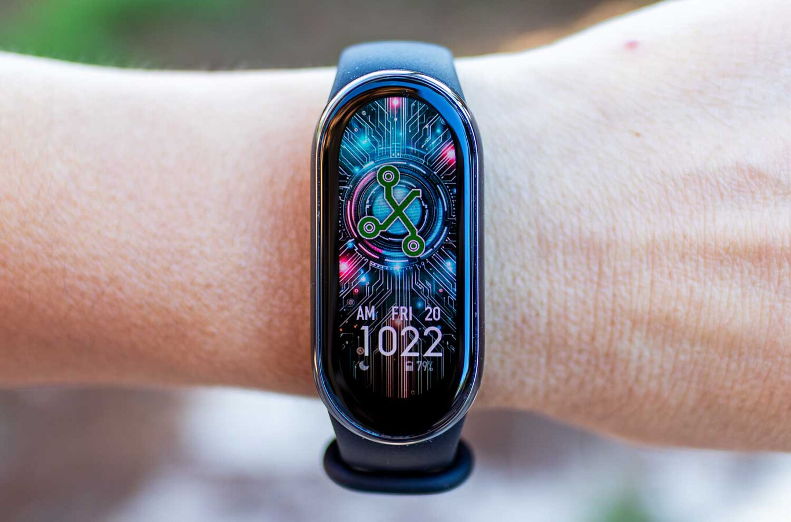

Noticia: contenido principal
La Xiaomi Smart Band 8 Active mejora respecto a su predecesora, llega con un grosor de tan sólo 9,99 milímetros y una pantalla que es un 10.5% más grande. Te encontrarás con un panel táctil LCD de 1,47 pulgadas que se puede personalizar con más de 100 esferas diferentes, hazlo único con la mayor facilidad. Nuestra protagonista ha sido diseñada para seguir el ritmo de los más deportistas, que no te engañe su precio. Cuenta con 50 modos deportivos entre los que encontrarás bicicleta estática, máquina elíptica, cinta de correr, yoga, comba, natación, andar, entrenamiento libre y muchos otros. Lo tendrás todo.
Una de las mayores bondades de la creación china es su autonomía, no tendrás que preocuparte por el cargador. Es capaz de alcanzar los 12 días de uso sin dificultad, una cifra que muy pocos pueden alcanzar. Por si no fuera suficiente, si eres un usuario muy exigente podrás extender su duración con la ayuda del modo ahorro de energía.
Noticia: Más información
Lo has podido comprobar con tus propios ojos, la pulsera inteligente de Xiaomi llega con todo lo que necesitas para disfrutar y contar con una ayuda extra. Creo sinceramente que es una compra con la que no se puede fallar por menos de 20 euros, ¿qué más se puede pedir? Si te interesa no le des muchas vueltas, el precio podría volver a subir en cualquier momento.
El dispositivo creado por Xiaomi se conectará con facilidad a tu smartphone sea de la marca que sea. La tecnología Bluetooth se encargará de ello, no tendrás que preocuparte por la compatibilidad. De hecho, la uso cada día y la tengo emparejada a un iPhone 15 Pro, por lo que puedes hacerte una idea.
La Xiaomi Smart Band 8 Active está a tu alcance por solo 19 euros, uno de los precios más bajos hasta el momento. Pero eso no es todo, ya que si eres miembro de Amazon Prime no tendrás que pagar nada por el envío.